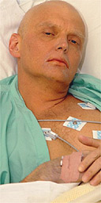

Alexander Valterovich Litvinenko was an ex-KGB agent and ex-FSB lieutenant colonel. After working in those services for many years, he made accusations that his superiors had ordered the assassination of Russian billionaire Boris Berezovsky, who had close ties with former Russian President Boris Yeltsin. After these public accusations, Litvinenko was fired from the FSB in 1998 and arrested in 1999. He was charged with abusing his power while in command during a FSB anti-terrorism operation. After a month in prison, he was released. He signed an agreement that he would not leave Russia.
In 2000, Litvinenko illegally left Russia to visit Turkey where he met his wife and son. Later that same year, the Litvinenko family left Turkey for the United Kingdom where they claimed political asylum. In 2002 and 2003, he published two books in which he severely criticized Russian President Vladimir Putin and his government. In his first book, Litvinenko alleged that FSB agents were involved in a 1999 bombing of an apartment block that killed more than 300 people. Russian officials blamed the explosions on Chechen separatists. They confiscated over 4000 copies of Litvinenko’s first book in Moscow before they could be sold. In his second book, Litvinenko alleged that President Vladimir Putin, during his time at FSB, was personally involved in organized crime.
On November 1, 2006, after meeting with two former KGB agents, Litvinenko suddenly fell ill and was hospitalized. The report is that he met these agents to discuss details concerning the October 2006 killing of Anna Politkovskaya, a controversial Russian journalist who had written articles critical of President Vladimir Putin and his government.
Initial screening tests by forensic toxicologists suggested that Litvinenko was poisoned by radioactive thallium. Thallium was a common ingredient in rat poison, but its use was banned in the 1970s. Thallium is colourless, odourless, and water-soluble. Among the distinctive effects of thallium poisoning are hair loss and damage to peripheral nerves. However, confirmation testing of these results did not reinforce the screening test results that Litvinenko was poisoned with thallium.
On November 23, 2006, Alexander Litvinenko died in the London hospital where he was being treated. Forensic toxicologists from the Health Protection Agency in the United Kingdom established that Litvinenko died after being poisoned with the radioactive isotope polonium-210. The poison had either been eaten or inhaled by Litvinenko.
The radioactive isotope, polonium-210, does not naturally occur in significant quantities. Its only known source is artificial production in a specialized nuclear reactor. Polonium-210 is used in photographic anti-static brushes, as a heat source to power thermoelectric cells in manmade satellites, and as a heat source to prevent the internal parts of lunar vehicles from freezing.
The use of polonium-210 as a poison had never been documented officially before. When absorbed in humans, polonium-210 causes hair loss, nausea, spleen damage, and liver failure. Without a working spleen, the human body has difficulties fighting infection, but an individual can live without a spleen because the liver and lymphatic system compensate for its absence. However, if a person’s liver fails, he or she will die within 24 hours because the body is unable, among other things, to regulate blood sugar, to break down fats or old red blood cells, and to produce blood proteins.
Police investigators found traces of polonium-210 at Litvinenko’s home, at a London hotel that Litvinenko visited before he became ill, and at a sushi restaurant where he ate on November 1. Forensic scientists and police investigators traced the source of the polonium used to poison Litvinenko to a nuclear power plant in Russia. Then, in December 2006, police investigators found traces of polonium-210 on two British airplanes that had flown between London and Moscow. The announcement about the source of the polonium and the presence of polonium on the airplanes has led many to suspect that the murder of Alexander Litvinenko was coordinated by an individual or a group of individuals in Russia.
In May 2007, British authorities formally requested the extradition of Andrei Lugovoi, an ex-KGB agent, to face murder charges in Britain with regard to Alexander Litvinenko's death. Both Lugovoi and the Russian government responded by denying any involvement.
At time of writing, this criminal case remains unsolved.

Alexander Litvinenko dying in hospital, November 20, 2006